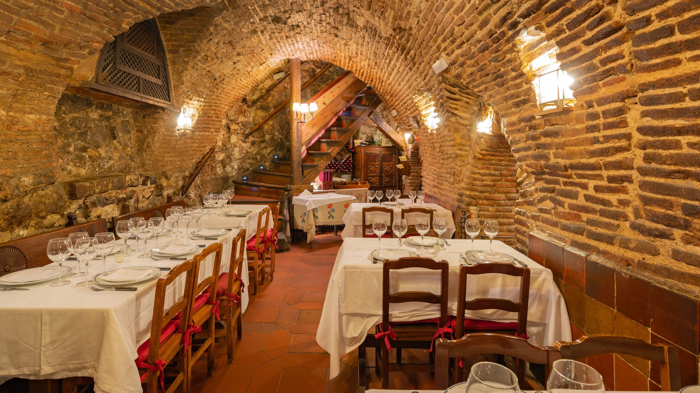
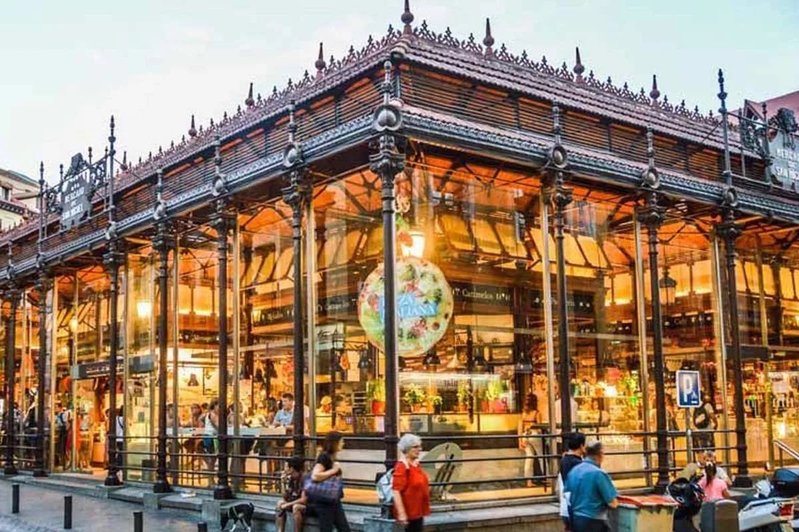

¿Dónde comer en Madrid?
Desde mercados historicos que son monumentos en si mismos hasta la misma distincion gastronomica internacional.

Tabernas
Lugares como Casa Labra o El Botín, donde el tiempo parece haberse detenido entre barricas y azulejos.
Ver tabernas

Mercados Gourmet
San Miguel, San Antón y la Cebada: templos de producto fresco y picoteo de alta calidad.
Ver mercados

Alta gastronomía
Madrid brilla con más de 20 estrellas Michelin, lideradas por la genialidad de DiverXO y Coque.
Ver restaurantes